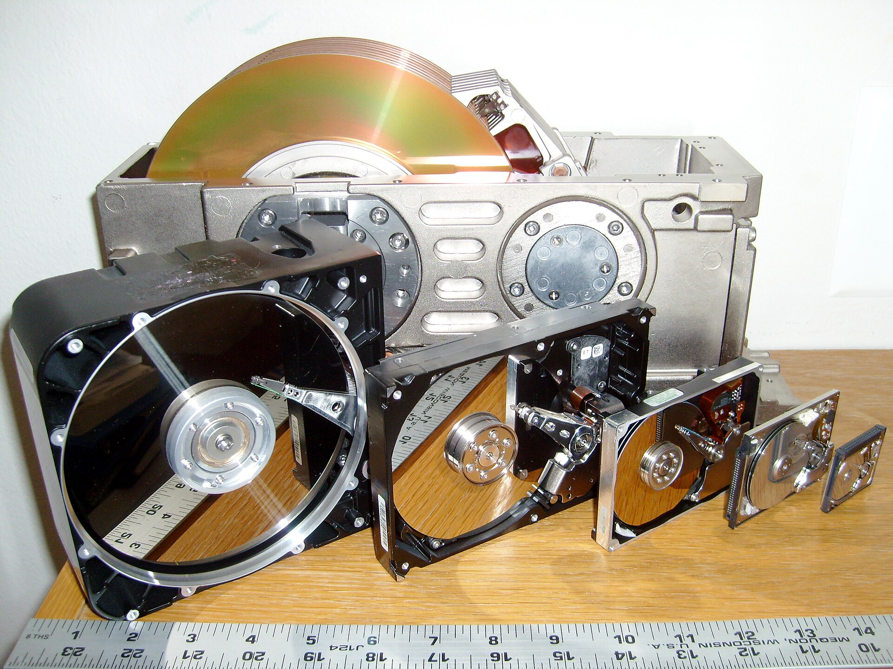
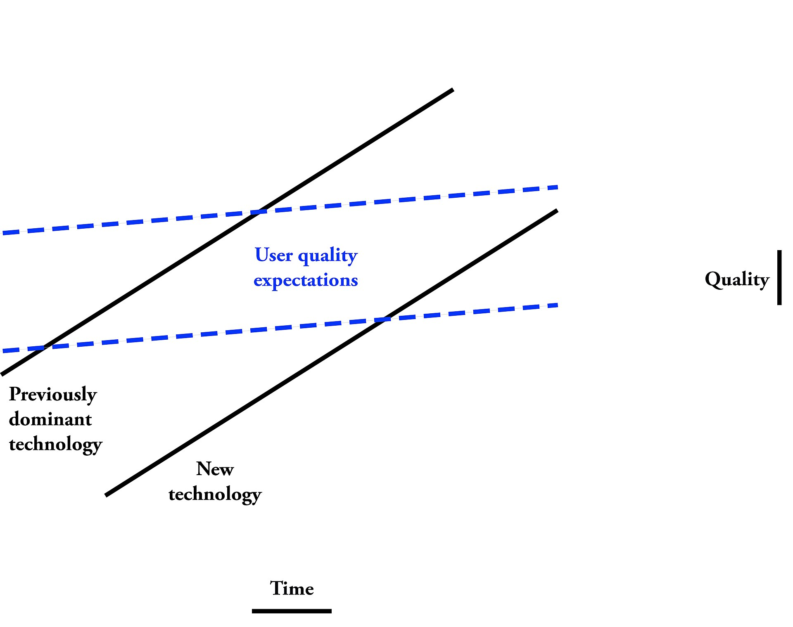
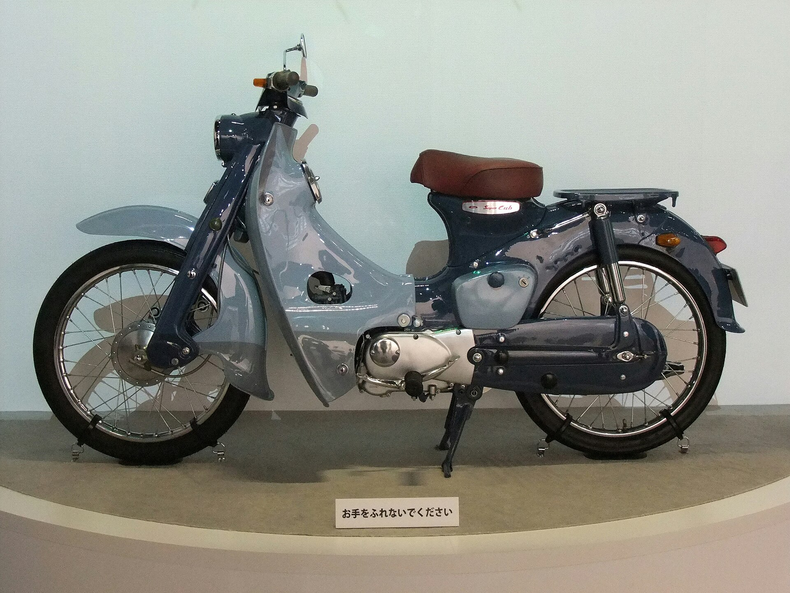
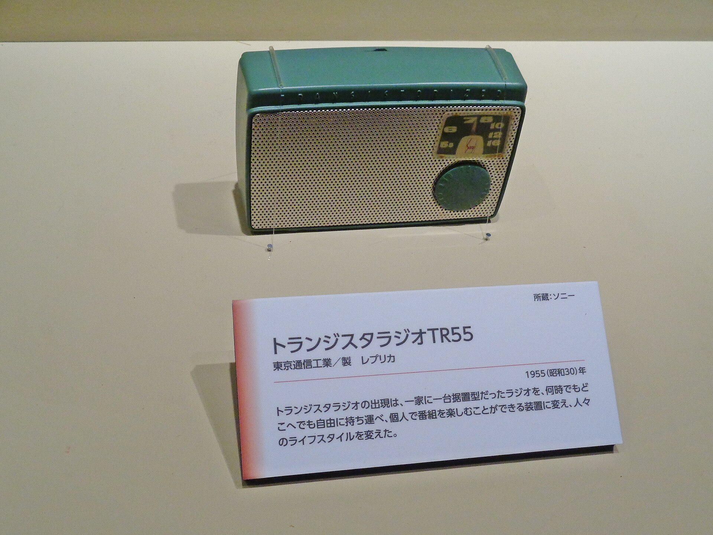

Saturday · Business
: why well-run companies lose to cheaper, worse products — and when they don’t
’s theory, from the 1995 article with through (1997) to the 2015 restatement “”: entrants win from low-end or that incumbents rationally ignore, then climb as incumbents what most customers need. , , ’s , ’s pocket radio, and versus are the cases; ’s critique and the King– study mark the limits.

{kind=link}
This is a strategy-framework lesson, not a biography and not a promise that labeling a rival “disruptive” tells you what to do. The framework is taken from named, public texts: and , “” (, January–February 1995); ( Press, 1997); and , , and , “” (, December 2015), whose wording on footholds, , the , , , , and the is followed closely here. counts (116 new technologies, 111 sustaining, 5 disruptive) and the and figures are as reported in ’s June 2014 essay “,” which quotes the book and then disputes it. margins (about 7 percent on for , 20 percent-plus for early , a roughly 20 percent cost advantage) come from the ’s own theory page, not from audited company filings. details come from ’s 1984 article and a Harvard thesis on ’s founding; details from the and the museum label on the photographed replica. The – meeting is ’s own account in his 2019 book (excerpted in ); ’s late-fee share of profits and the 2002 “niche market” quote are as reported them in (2012), not independently re-checked. The Limits section reports ’s claims and ’s reply side by side; it does not settle who is right about every case. The finding (7 of 77 cases, 9 percent, matched all four elements) is and ’s, based on expert interviews rather than new financial data. No quotes, numbers, or citations are invented; where a source is paywalled, only what its public pages or authorized copies state is used.
Select any words, or tap a dotted term.
- 1955 Sony’s first transistor radio , the company soon renamed , sells the . ’s later work treats the pocket radio as a : poor sound, but a radio of one’s own for people who had none.
- 1959–1960 American Honda in Los Angeles ’s small U.S. team plans to sell larger motorcycles; when those falter, it starts selling the 50cc through sporting-goods and other non-motorcycle stores (, 1984; Harvard thesis).
- mid-1960s Mini-mills start at rebar melt scrap in and begin at the bottom of the product range, , before climbing to structural and sheet steel.
- Jan–Feb 1995 “Catching the Wave” and introduce “” in , using the industry as the main evidence.
- 1997 The Innovator’s Dilemma; Netflix launches ’s book argues that good management causes great firms to fail. The same year launches a DVD-by-mail service that, by the 2015 account, most customers had no reason to want.
- Sep 2000 The $50 million offer , , and CFO fly to Dallas and propose that buy for $50 million. writes that CEO was “struggling not to laugh.”
- Jan 2007 Netflix “Watch Now” begins streaming films and TV episodes to PCs at no extra charge, rolled out gradually to a subscriber base of more than 6 million (AP report).
- Sep 2010 Blockbuster files Chapter 11 files for bankruptcy listing $1.02 billion in assets and $1.46 billion in debt, facing competition from mail, kiosk, and online rivals (New York Times DealBook).
- Jun 2014 “The Disruption Machine” ’s essay attacks the theory’s evidence and its spread into schools, hospitals, and newsrooms; answers in .
- Sep–Dec 2015 The test and the restatement King and ’s study finds 9 percent of 77 textbook cases fit all four elements; , , and publish “” and rule that is not disruptive but was.
- 23 Jan 2020 Christensen dies dies in Boston at 67 of complications from cancer treatment, CNN reports, citing his brother’s statement to the Deseret News.
Before
The puzzle: capable leaders keep losing to weaker products
The January–February 1995 article that introduced the idea opened with a list, not a theory. “One of the most consistent patterns in business is the failure of leading companies to stay at the top of their industries when technologies or markets change,” and wrote in “.” and entered the radial-tire market late. let create the small-copier market. allowed and to take over the excavator market. gave way to . None of these companies was obviously lazy, careless, or short of money. That was the puzzle the article set out to explain.
came to the question through a single industry. He entered the doctoral program at in 1989 and joined its faculty in 1992, notes in her 2014 essay on the theory, and his doctoral research tracked the industry, where product generations turned over fast enough to watch leaders rise and fall within a decade. The 1997 book that grew out of that work, , argued that the leaders did not usually fall because they made bad decisions. They fell because they kept making the good decisions that had made them leaders: they listened to their best customers, invested where margins were highest, and passed over small markets that could not move their revenue.
{kind=link}
The book reached a wide audience at the right moment. later noted that it became a bestseller in 1999, at the height of the dot-com boom, because it seemed to describe the threat e-commerce posed to established companies. By 2015 , , and could write that executives at , , and treated the theory as a guide. They also complained that “too many people who speak of ‘disruption’ have not read a serious book or article on the subject.” This capsule follows their definitions closely for that reason: the word is now used so loosely that the framework only helps if its terms are kept narrow.
The framework
Sustaining versus disruptive, two kinds of foothold, and a climb nobody contests
The theory starts by splitting innovation into two kinds. A makes good products better in the eyes of an incumbent’s existing customers. The 2015 article gives ordinary examples — “the fifth blade in a razor, the clearer TV picture, better mobile phone reception” — and stresses that can be small steps or major technical breakthroughs. What they share is that they help firms sell more to their most profitable customers. In these contests incumbents usually win, because they have the customers, the money, and every reason to fight. The authors report that in ’s study only 6 percent of entrants pursuing a sustaining strategy succeeded. How new or impressive a technology is does not decide which kind it is.
A is initially considered inferior by most of an incumbent’s customers. The 2015 article defines disruption as “a process whereby a smaller company with fewer resources is able to successfully challenge established incumbent businesses.” Mainstream customers do not switch merely because the new offering is cheaper. They wait until its quality rises enough to satisfy them, then adopt it and happily accept the lower price. The entrant’s early product is worse on the dimension the mainstream values most — capacity, sound quality, selection, speed — and better on something else, usually price, size, simplicity, or convenience.
Disruptions start in one of two places that incumbents overlook. A exists because incumbents keep improving products for their most demanding customers and what less demanding customers need; an entrant can serve those customers with a cheaper, product. and discount retailers are the authors’ examples. A exists where people are not buying at all. The 2015 article’s example is photocopying: charged large corporations high prices for high performance, while school librarians, bowling-league operators, and other small customers made do with carbon paper or mimeograph machines until personal copiers arrived in the late 1970s. The pocket radio and the personal computer, the authors add, were largely ignored by makers of tabletop radios and minicomputers because they were aimed at of those goods.
Why do well-run incumbents let this happen? The 2015 article lists the reasons in the order researchers found them. First, a company’s strategy is shaped by the customers who provide its revenue, so incumbents sensibly listen to existing customers and concentrate on . Second, that focus becomes part of the company’s routines. Interviews with managers showed that favored sustaining projects, which had high margins and large markets with well-known customers, while “inadvertently starving” disruptive projects meant for smaller markets with poorly defined customers. No executive had to decide to ignore the threat; the budgeting system did it. Third, the numbers look right at every step. The ’s account of steel puts the ’ on at about 7 percent. Handing that business to a and shifting capacity to higher-margin products was sound financial management — until the higher-margin products were attacked too.
later added a reason about how incumbents count costs. In (2012) he described executives who understood a disruptive threat but refused to build, for example, a new sales force to sell the disruptive product, because reusing the existing one looked far cheaper. Standard finance teaches managers to compare and ignore sunk ones, and the marginal cost of reusing existing assets almost always looks lower. Entrants have no existing assets, so their only question is what the new business needs. The result, he argued, is that incumbents with more capital find the new venture expensive while entrants with less capital find it straightforward.

{kind=link}
The diagram captures the theory’s central timing claim: products improve faster than customers’ needs grow. That is how the incumbent , and it is also how the entrant eventually becomes . The 2015 article explains why entrants keep climbing instead of staying comfortably at the bottom. A foothold market usually holds several similar entrants, not one. While incumbents still sell there at high prices, they provide a under which all the entrants can profit. When the incumbents rationally leave, the umbrella disappears and the entrants compete on price. The strongest ones improve their products and move , where they can again compete against higher-cost incumbents. “The disruptive effect drives every competitor — incumbent and entrant — ,” the authors write.
Four qualifications from the same article keep the framework honest. Disruption is a process, not a product at a moment: the first minicomputers were disruptive because of the path they followed from the fringe to the mainstream, and complete substitution can take decades — more than 50 years after the first discount department store opened, traditional department stores still operate. Disrupters often win with a different , not just a different product. Some disruptive paths fail; the theory “says very little about how to win in the foothold market.” And “disrupt or be disrupted” is bad advice: incumbents should keep investing in their core customers while creating a , protected by senior leadership, to pursue the new model.
The cases
Disk drives, mini-mills, a 50cc Honda, a pocket radio, and a red envelope
Clayton M. Christensen
1952–2020
professor. Built the theory from data, published (1997), and restated it with and in 2015.
Joseph L. Bower
HBS
Co-author of “” (, 1995), the first statement of the idea.
Michael E. Raynor and Rory McDonald
co-authors, 2003 and 2015
co-wrote (2003); both co-wrote the December 2015 restatement that ruled on , , and .
Marc Randolph and Reed Hastings
Netflix co-founders
Pitched in September 2000. ’s memoir (2019) is the source of the meeting story.
Kihachiro Kawashima
American Honda, from 1959
Ran ’s first U.S. operation; the Harvard thesis on its founding credits him with pushing the through sporting-goods and other unconventional stores.
are where the theory was built. As summarizes the book, studied the era from the late 1970s when drives shrank from 14 inches to 8, then to 5.25, 3.5, 2.5, and 1.8 inches. He counted 116 new technologies, classed 111 as sustaining and five as disruptive, and found that each of the five introduced “smaller that were slower and had lower capacity than those used in the mainstream market.” The best-known example is . In the mid-1980s delayed making 3.5-inch drives, which makers of portable and laptop computers wanted, because its biggest customer, , wanted a better and faster 5.25-inch drive for full-sized desktops. did not ship 3.5-inch drives until 1988, which treats as too late. The case shows the mechanism in its simplest form: the leader did exactly what its most important customer asked.
are the standard low-end case. In the ’s account, began in the mid-1960s to melt scrap in , a process that cut costs by about 20 percent. At first their steel was only for , the set in concrete, the lowest-quality and lowest-margin product in the market. earned about 7 percent on and were glad to give it up; the early earned 20 percent or more on the same product. The improved and moved into higher grades, eventually structural and sheet steel, and each time the found it more profitable to shift to higher-margin products than to build of their own. By the early 2000s, the institute says, companies like had disrupted such as and . The climb was slow: the 2015 article says technology improved so gradually that it took more than 40 years before matched the revenue of the largest .
The incumbents were not idle. As quotes the book, cut its labor from nine hours per ton of steel in 1980 to just under three hours per ton in 1991, and its workforce from more than 93,000 to fewer than 23,000. In ’s telling, even that efficiency drive could not stop the , because the were improving at the top of the market while the entrants kept taking the product tiers beneath them.
{kind=link}
’s entry into the United States shows a that the entrant almost missed itself. In , lists the small off-road motorcycles that , , and brought to North America and Europe as disruptive compared with the powerful road bikes made by and . The fullest account of how got there is ’s 1984 article, built on interviews with the executives who ran the entry. ’s small team in Los Angeles, from 1959, planned to compete with larger motorcycles. When those bikes ran into trouble on American roads, the team turned to the 50cc , which it had not planned to push, and found that the stores that wanted it were not motorcycle dealers.
A Harvard thesis on ’s founding adds detail. In spring 1960 the retailer offered to sell 650 a year; turned the offer down and instead had his sales team place bikes in sporting-goods stores, hardware stores, fishing-goods stores, and lawn-mower repair shops, later backed by the “Nicest People” advertising campaign. Those outlets reached shoppers who were not walking into motorcycle dealerships at all. In the theory’s terms, had no reason to respond: its customers did not want a 50cc bike, and its dealers could not make money selling one.

{kind=link}
’s radio is the new-market case returned to most often. In the ’s telling, early could not handle the power needed for furniture radios and floor-standing televisions, which ran on . and other leaders worked to make match quality so they could serve their existing customers, people who could afford high-end electronics. instead built a pocket radio that suited the ’s limits and sold it to people, many of them teenagers, who were happy to have a small radio with inferior sound because the alternative was no radio of their own. As improved, moved into larger and better products and competed with the leaders directly. HBS Working Knowledge’s 2003 report on a talk at a Harvard entrepreneurship conference summed up the lesson as a mock mission statement: “We make crummy products for .”

{kind=link}
versus is the case the 2015 article uses to show that disruption takes time. When launched in 1997, its service did not appeal to most of ’s customers, who typically rented new releases on impulse. had an online-only interface and a large inventory, but mail delivery meant films took several days to arrive. It appealed to only a few groups: “movie buffs who didn’t care about new releases, early adopters of DVD players, and online shoppers.” The authors are explicit that if had stayed there, ’s decision to ignore it “would not have been a strategic blunder.”
had a clear chance to buy its way out. In September 2000, writes in , he, , and CFO flew to ’s Dallas headquarters to propose that buy for $50 million and let run the online side of the business. When named the price, saw CEO “struggling not to laugh.” The puts ’s revenue in 2000 at more than $5 billion, $800 million of it from late fees. argued in 2012 that the two companies made money in opposite ways. profited when customers returned films late — analysts estimated, he wrote, that 70 percent of its profits came from late fees — while a subscriber paid a monthly fee and did best when discs sat unwatched. By 2002, he wrote, had $150 million in revenue, and said publicly that online rental was “serving a niche market.”

{kind=link}
The turn came with a new enabling technology. In January 2007, the Associated Press reported, began offering streaming films and TV episodes on PCs at no extra charge through a “Watch Now” feature, rolled out gradually to a subscriber base of more than 6 million. The 2015 article says streaming eventually made appealing to ’s core customers, “offering a wider selection of content with an all-you-can-watch, on-demand, low-price, high-quality, highly convenient approach. And it got there via a .” Had attacked ’s core market from the start, the authors argue, would probably have mounted a vigorous and perhaps successful counterattack. On September 23, 2010, filed for bankruptcy protection, listing $1.02 billion in assets and $1.46 billion in debt.
{kind=link}
Test cases
Uber, Tesla, and the iPhone: the authors grade their own theory
The 2015 article spends its opening pages on a company almost everyone called disruptive. , founded in 2009, was operating in hundreds of cities in 60 countries, with a funding round implying an enterprise value near $50 billion. Was it disrupting the taxi business? “According to the theory, the answer is no,” the authors wrote. did not start in a , which would have meant taxis had customers by being “too plentiful, too easy to use, and too clean.” It did not start with either: it launched in San Francisco, a well-served taxi market, among people already in the habit of hiring rides. Its service was rarely described as worse than a taxi, and taxi companies were responding with their own hailing apps and legal challenges, which is how incumbents react to sustaining threats. put it more bluntly to at : “Relative to the taxi industry, is a .”
The authors did not claim would fail. They called it an outlier and pointed to regulation: in many cities entry and prices were so tightly controlled that taxi companies had rarely innovated and could not respond quickly. They also noted that , cheaper than a traditional limousine but without advance reservations, sat at the low end of the black-car market — the one place where looked like a disrupter.
got the same treatment. Its foothold was at the high end of the car market, among customers willing to spend $70,000 or more, a segment incumbents cared about. If the theory was correct, the authors wrote, faced either acquisition by a much larger incumbent or “a years-long and hard-fought battle for market significance.” The was sorted into both categories. At its 2007 launch it was a in smartphones, aimed at the customers incumbents already wanted and winning on product superiority. Its later growth, they argued, was disruptive — not to other phones but to the laptop as the main way people went online, enabled by a that connected app developers with users.
That reading was a correction. In 2007, reports, told that “the prediction of the theory would be that won’t succeed with the .” In his 2014 interview he explained that he had first seen the as a sustaining product in the phone market and missed that it was disruptive to laptops. “I just missed that,” he said. “And it really helped me with the theory, because I had to figure out: Who are you disrupting?” The episode shows both the theory’s use and its risk: the same framework can support opposite predictions depending on which market an analyst decides the product is competing in.
Limits
A good explanation of the past, a weaker guide to the future
The strongest public critique came from a historian. In “,” published in ’s June 23, 2014 issue, argued that the theory rests on handpicked case studies and that the cases are weaker than they look. ’s original research, she noted, defined “successful firms” as those that reached more than $50 million in revenue in constant 1987 dollars in any year between 1977 and 1989 — a cutoff he himself called arbitrary. , the textbook incumbent that missed 3.5-inch drives, doubled its sales to $2.4 billion between 1989 and 1990, and by 1997, the year the book appeared, was the largest company in the industry, with revenues of $9 billion. Many of the celebrated entrants were gone: failed shortly after its disruptive leap, and collapsed after a 1989 fraud investigation.
{kind=link}
pressed the same objection across other industries. Several of the “new entrants” in the excavator case had been making cable-operated shovels for years, and , the old-line maker writes about most, grew its sales sevenfold and its profits twenty-five-fold between 1962 and 1979; in 2011 bought it for nearly $9 billion. In steel, she argued, left out that ’s workforce was unionized while the ’ generally was not, and that 22,000 of its workers did not go to work during a 1986–87 labor action — and in 2014 the largest producer was still . On prediction she was sharper still: the $3.8 million that launched on March 10, 2000, lost 64 percent in less than a year, while the Nasdaq lost 50 percent, and was quietly liquidated. Her broader point was that “ can reliably be seen only after the fact,” and that schools, hospitals, and newspapers have obligations that make them unlike makers: “People aren’t .”
answered within days, by phone, to of . He began by agreeing with her about the word: in its first pages, he said, the essay seemed to be trying “to rein in this almost random use of the word ‘disruption,’” and he was “delighted that somebody with her standing would join me.” Then he turned on her method, arguing that she had engaged with the 1997 book but not the later work that refined it, and calling the essay “a criminal act of dishonesty — at Harvard, of all places.” ’s summary of the exchange observed that the two agreed on one thing: “disruption” had become a cliché.
The most systematic test came the next year. In ’s Fall 2015 issue, and took the 77 cases listed in and and interviewed 79 experts on them. They tested four elements of the theory: that incumbents were improving along a trajectory of ; that they customer needs; that they had the capability to respond; and that they floundered as a result of the disruption. Experts agreed that incumbents floundered in about 62 percent of the cases, but only seven of the 77 cases — 9 percent — showed all four elements. Where experts on a case disagreed, the authors gave the theory the benefit of the doubt.
The 2015 restatement conceded several of these limits in its own words. The theory began as “a statement about correlation” and only later developed a causal explanation. “Universally effective responses to disruptive threats remain elusive,” they wrote, and of their own recommended : “Sometimes this works — and sometimes it doesn’t.” And: “ does not, and never will, explain everything about innovation specifically or business success generally.” Read together, the critics and the authors leave a narrower, more useful tool. It explains why a well-run incumbent can rationally ignore a weak entrant, and it tells you which questions to ask before calling anything disruptive. Where did the entrant start? Are incumbents really ? Could they respond if they chose to? Is the entrant on a path , or only nibbling at the edge?
Earlier Saturday capsules overlap here in specific ways. , ’s later framework, explains what a foothold customer is trying to get done; disruption explains how that foothold grows. also looks past current customers to noncustomers, but it redesigns the value curve rather than tracking a trajectory from below. In terms, a disrupter’s foothold is a deliberate choice that incumbents decline to contest. And the capsule’s underdog is literal here: called “the quintessential David going up against the Goliath of the movie rental industry.”
After
The word spread; the theory narrowed
spent the rest of his career refining and extending the idea. (2003), written with , focused on how to build new-growth businesses and developed the distinction between low-end and ; previewing it in 2003, he told a Harvard audience that “basically any stock you wish you have owned started out as a disruptive company.” He and co-authors applied the theory to schools in , to health care in , and to universities in — the extensions attacked most sharply. The 2015 article kept that thread, treating online learning as a possible in higher education and describing convenient-care clinics that follow standardized protocols, a “process” , as a disruptive alternative to the doctor’s .
Meanwhile the word escaped the theory. The 2015 article included a Factiva count showing English-language articles using “” or “” rising steeply in the years before 2015. Its authors wrote that was “in danger of becoming a victim of its own success,” used “to describe any situation in which an industry is shaken up and previously successful incumbents stumble.” Their correction was to insist on the narrow definition: a disruption begins in a low-end or , and success is not part of the definition.
died in Boston on 23 January 2020, at 67, of complications from cancer treatment, CNN reported, citing his brother’s statement to the Deseret News. The framework that outlived him is most useful in the plain form he and his co-authors gave it in 2015: sustaining improvements usually favor incumbents; disruptions start where incumbents are not looking and win by improving along a path the incumbent has sound financial reasons not to follow. Whether a particular company fits is a factual question about its customers, margins, and trajectory — not a compliment.
One question
Which competitor are you ignoring for good reasons?
Pick the rival your best customers would never switch to today. What is it worse at, what is it better at, and how many years of improvement would it need before your median customer — not your most demanding one — found it ?
Fun fact
The theorist who would not play the final
In (2012), tells how his university basketball team in England reached the final of its big tournament, and the championship game was set for a Sunday. At sixteen he had promised never to play on his Sabbath. The coach and every teammate asked him to break the rule just this once; he refused and sat out. His teammates won anyway. He tells the story in the same passage where he blames ’s paralysis on : the cost of “just this once” always looks small, and the full cost arrives later. His conclusion was that it is easier to hold a principle 100 percent of the time than 98 percent of the time.